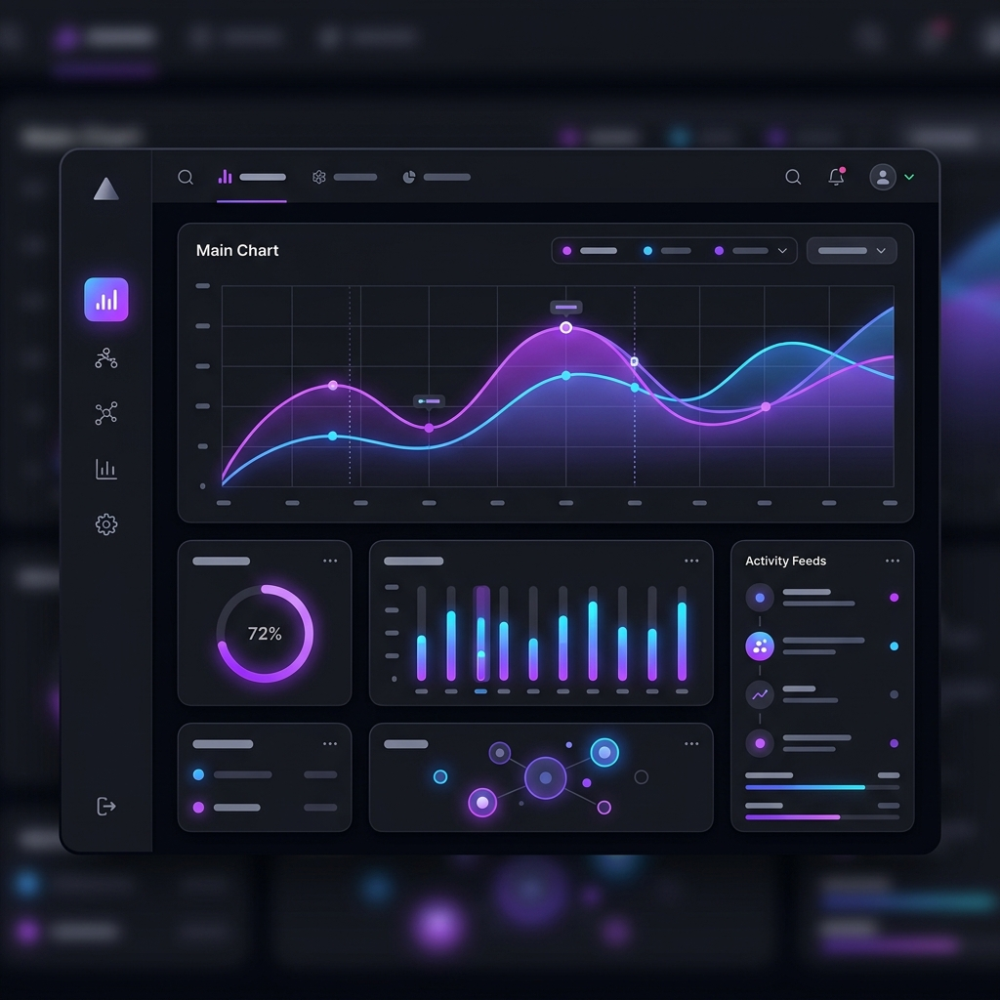
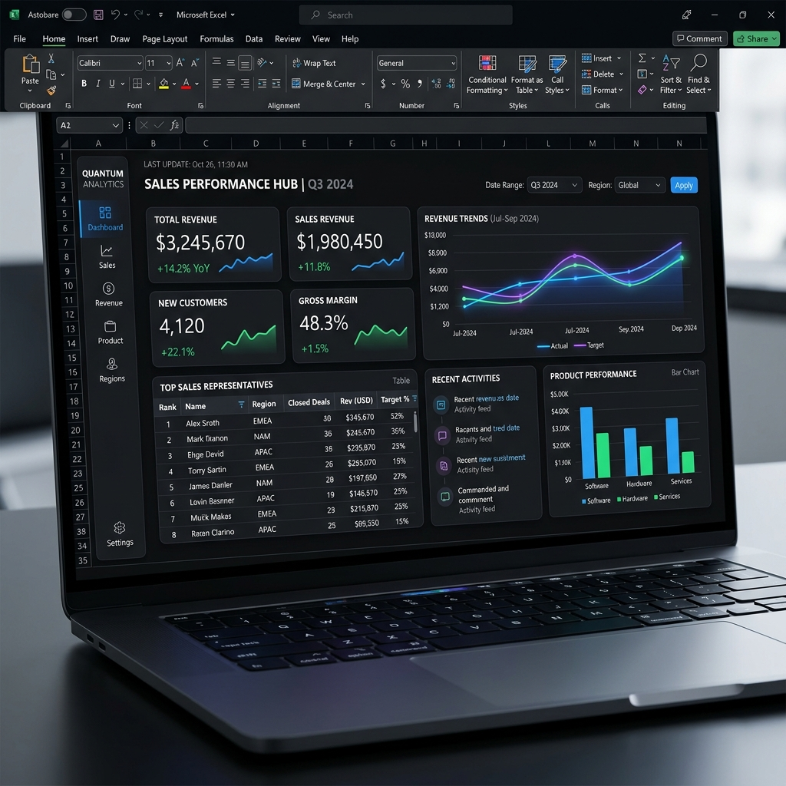

Transforming complex, manual Excel tasks into high-performance, automated business systems. Stop wrestling with data and start making decisions.

I engineer robust, scalable solutions tailored for complex business environments, focusing on reliability and speed.
Modular, object-oriented VBA architecture. Memory-optimized macros, error-handled code, and high-volume batch processing.
Power BI-inspired interface design right inside Excel. Dynamic slicers, interactive PivotCharts, and clean, enterprise-grade reporting.
Automated data extraction, cleansing, and normalization. Converting messy CSVs and system exports into analysis-ready databases.
End-to-end workflow automation connecting HR, Sales, Supply Chain, and Finance data for seamless operational efficiency.
Specialized reporting systems handling massive datasets, complex dynamic range calculations, and automated monthly rollups.
Refactoring slow, crash-prone workbooks. Optimizing PivotCaches and calculation engines for lightning-fast performance.
A manufacturing client was spending 20 hours a week manually consolidating exports from 4 different ERP systems, leading to high error rates and delayed executive reporting.
I engineered an automated VBA pipeline that dynamically detected new files, normalized the data, and populated a high-performance executive dashboard.

Built with enterprise standards, utilizing the full power of the Microsoft data ecosystem.
A systematic, consulting-led approach to ensure the final product exactly meets business requirements.
We analyze your current manual workflows, define the bottleneck, and architect a scalable data model before writing any code.
Rapid prototyping followed by rigorous VBA engineering. Regular check-ins ensure the UI and logic align with your operational needs.
Delivery of a polished, error-handled application, complete with documentation and team training to ensure smooth adoption.
I work with both. Whether you are a small agency trying to automate billing, or an enterprise department dealing with millions of rows of telecom data, the core principles of robust data engineering apply.
Yes. Many 'Excel Experts' just add more formulas to a broken foundation. I specialize in performance optimization—refactoring calculation logic, optimizing PivotCaches, and using VBA arrays in memory to turn 5-minute calculations into 3-second macros.
That's completely fine. As a Business Process Consultant, part of my job is to look at your current workflow, identify the inefficiencies, and propose the technical solution. You just need to tell me what your business goal is.
It varies widely based on complexity. A simple macro to clean up a daily report might take 2-3 days, while a full executive dashboard with multi-source ETL pipelines could take 3-6 weeks.
Fill out the form below with details about your manual workflow or data bottleneck, and I'll get back to you within 24 hours.